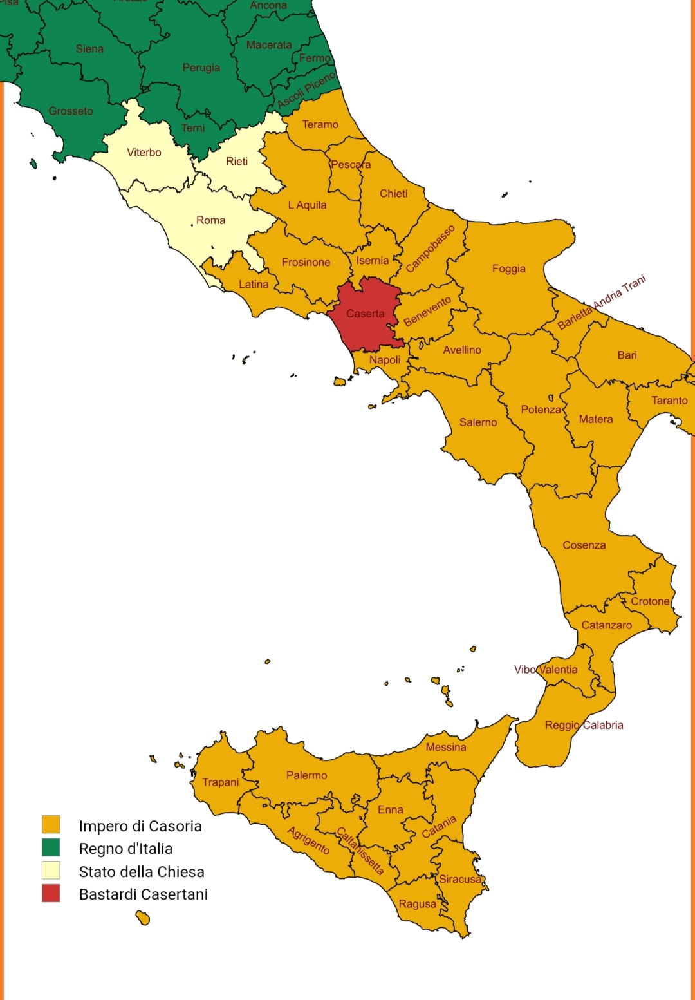
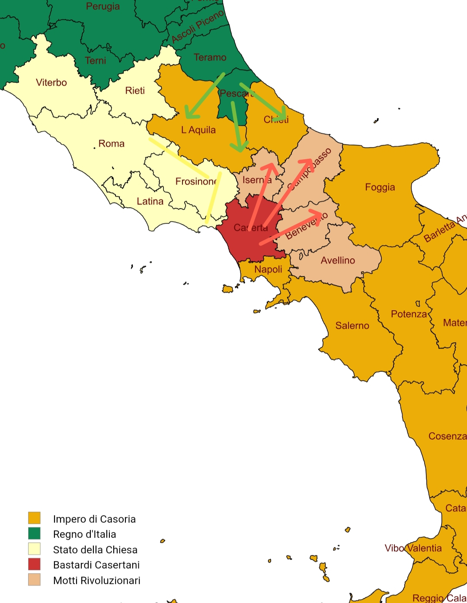

Le parole piene di forza e di energia che provenivano da questo grande figlio di puttana (I'm sorry Pika) di Vittorio Scala aveva mobilitato le masse ad inseguire il loro nuovo leader nell'assedio della reggia imperiale. Mentre i soldati Casoriani si sacrificavano, combattendo in vano le orde dei lavoratori e contadini Casertani, Giangingillo I fuggì dai tunnel sotterranei scavati appositamente dagli Ebrei new yorkesi. Dope ore di scontri, l'esercito popolano conquistò la reggia: erano ormai migliaia di migliaia, equipaggiati con poche armi moderne, rubate dalle armerie della reggia stessa, e molti utensili, come martelli e forconi. Vittorio seguì le sue truppe, pianificando un preciso e funesto attacco ad Aversa, al confine con il territorio centrale di tutto l'Impero. Vittorio fu prudente, tagliando le linee telefoniche e postali per tutta la regione, isolando le truppe a Casoria con il resto dell'esercito, diviso in tutta la penisola.
Arrivati ad Aversa, i ribelli innondarono le strade in fretta e furia, saccheggiando i centri abitati e le aziende agricole. Le poche truppe Casoriane, indebolite ed isolate, contro il nemico socialista: colpi sparati, bombe lanciate, cannoni dispiegati. La fuga di massa finale fu la ciliegina sulla torta, con la battaglia che finì in una brutale e umiliante sconfitta di Casoria, mentre i socialisti avanzavano nella regione, il popolo scappava, in preda al terrore rosso, anche se erano troppo ignoranti per comprendere il manifesto di Karl Marx. Ma siamo sinceri. Che gliene frega ai Casoriani del comunismo in sé? Tanto, tutti lo odiano come ideologia, tranne i cubani ed i nord coreani, per qualche strano motivo. Odio il comunismo! Odio la sinistra! AMERICA RAAAAAAAAAAAAAAAAAAAAAAAAAAAAAAAAAAAAAAA AAAAAAAAAAAAAAAAAAAAAAAAAAAAAAAAAAAAAAAA AAAAAAAAAAAAAAAAAAAAAAAAAAAAAAAAAAAAAAAA AAAAAAAAAAAAAAAAAAAAAAAAAAAAAAAAAAAAAAAA AAAAAAAAAAAHHHHHHHHHHHHHHHHHHHHHHHHHHHHH HHHHHHHHHHHHHH!!!!!!

Con l'Impero Casoriano in crisi, Vittorio Scala stava già contattando Vittorio Emanuele III per vie non ufficiali, informando il suo alleato della vittoriosa rivolta che avevano provocato. Il giovane monarca aveva ambizioni chiare, e tanta determinazione per vendicare i bravi Italiani che erano morti insieme a Garibaldi nella Spedizione dei Mille. Avendo dato l'ordine di mobilitazzione totale, ammassava i suoi uomini ad Ascoli Piceno, pronto per sfondare le difese a Teramo dei Casoriani. Ed ecco che, pochi giorni dopo, le truppe Italiane entrarono a forza nei territori nemici: un contigente di 200mila uomini, conquistando Pescara ed avanzando verso l'Abruzzo. Anche lo Stato della Chiesa, sfruttando questa battaglia tra i due giganti, occupò Latina e Frosinone, per poi ammassare le loro truppe verso il confine armato tra gli Italiani ed i Casertani. Intanto i moti rivoluzionari si espansero tra le Marche ed il nord della Campania, mentre le truppe Vittoriane avanzavano verso Casoria...

Le avanzate nemiche erano troppo veloci per venire fermate. Casoria stava perdendo su tutto il territorio, e l'Imperatore Giangingillo I era ancora disperso nei territori campani, ricercato dai Casertani. Con il nemico rosso per la strada verso la capitale, il governo locale di Casoria, senza l'Imperatore, decise di arrendersi: il 12 Febbraio del 1903, Casoria capitola e, dopo aver firmato l'infamoso Trattato di Secondigliano, viene annessa dal Regno d'Italia di Vittorio Emanuele III. Vittorio Scala diventa senatore a vita del regno, mentre Vittorio Emanuele celebra nella sua dimora. Il nostro caro re interrompe i festeggiamenti quando, all'improvviso, Vittorio Scala arriva davanti al cancello del palazzo sabaude. Dopo essere entrato, il giovane rivoluzionario non è molto contento, né soddisfatto: "Illustrissimo Emanuele III, ho ancora un vuoto dentro di me da colmare: la morte di mio padre non è stata ancora vendicata. Giangingillo I, il dittatore di Casoria, è ancora a piede libero. Devo assolutamente trovarlo ed ucciderlo" "Oh, e non mi rompa le palle! Ho 1200 invitati e 300 botti di vino da aprire e da bere entro domani mattina. Ma sorridete, mio giovane socialista: abbiamo vinto la guerra. La vostra battaglia personale non è andata, bensì rimandata. Osservate il cielo stellato, mio caro! Che oggi è Casoria provincia di Napoli, e non il contrario!"